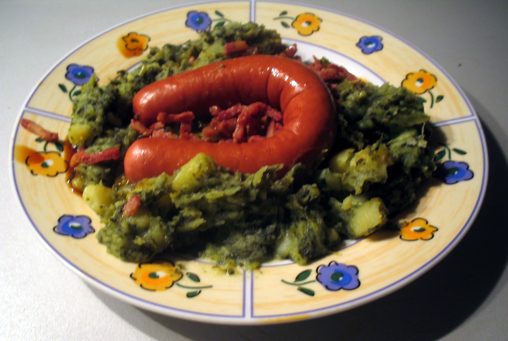

Home
Stamppot

Description
Stamppot is a traditional Dutch dish originating in the Netherlands, consisting of mashed potatoes combined with one or several vegetables (such as kale, sauerkraut, endive, or carrots) and typically served with smoked sausage (rookworst). The name translates literally to "mash pot," reflecting the preparation method where potatoes and vegetables are boiled and then thoroughly mashed together.
Ingredients
- Floury potatoes (e.g. Russet, Yukon Gold)
- Curly kale (boerenkool), stems removed, chopped
- Rookworst (Dutch smoked sausage) or kielbasa
- Butter
- Warm whole milk
- Salt & black pepper
- Nutmeg
- Seeded mustard or gravy
Steps
- Boil the potatoes: Peel and cut into even chunks. Place in a large pot, cover with cold salted water, and bring to a boil. Cook for 15 minutes.
- Add the kale: Place the chopped kale on top of the potatoes in the same pot. Lay the rookworst on top of the kale, cover, and steam everything for another 10 minutes until the potatoes are fork-tender.
- Mash: Remove the sausage and set aside. Drain the potatoes and kale, return to the hot pot, and let any excess moisture steam off for a minute. Add the butter and warm milk, then mash until creamy but still slightly rustic. Season with salt, pepper, and a pinch of nutmeg.
- Warm the sausage: Simmer the rookworst in a separate pot of water for 10–15 minutes (or pan-sear) until heated through.
- Serve: Spoon the stamppot onto plates, top with sliced sausage, and serve with a dollop of whole-grain mustard or a simple gravy.